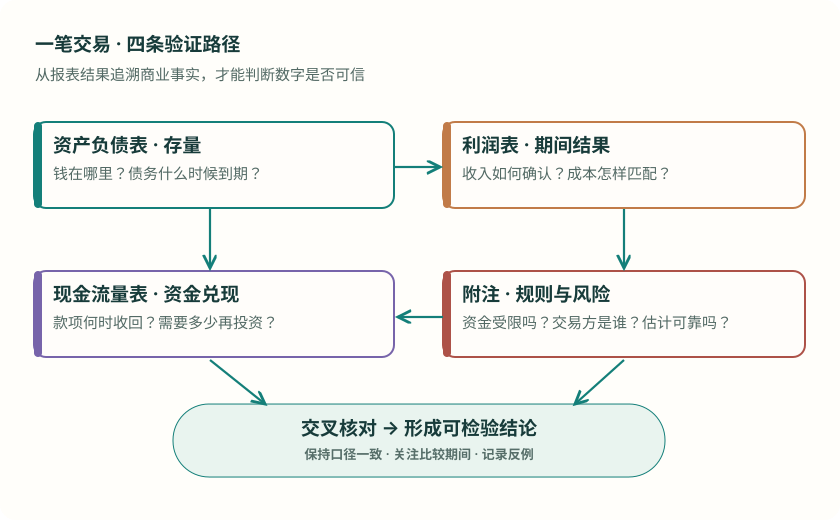

AN OPEN FINANCIAL READING COURSE · 28 LESSONS
从报表数字，
读懂一家企业。
利润不等于现金，资产不等于可动用资金，增长也不天然代表价值。用财务结构—利润形成—现金验证—附注证据建立可复核的分析框架。
阅读建议：先完成 01–10，之后带着真实年报练习；案例数据若无特别注明，均为教学虚构。

HOW TO READ
四个问题，构成分析闭环
01 / 结构
企业拥有什么？
区分现金、应收、存货与长期资产；识别债务期限和资产受限情况。
02 / 效益
利润如何产生？
拆开收入、成本、费用及一次性项目，理解利润的可持续性。
03 / 兑现
利润变成现金了吗？
以经营现金流和营运资本检验应计利润，观察投资与融资需求。
04 / 证据
附注支持结论吗？
核对会计政策、交易对手、风险敞口与比较数据，提出可证伪的解释。
COURSE INDEX
分层学习 · 全部 28 篇
前十篇已按图解式长文重写；11–18 已完成第二批审校；19 已完成复核；20–28 仍为迁移版本，待逐章复核。
理解报表
从会计恒等式出发，建立三表和附注的共同语言
分析经营质量
用盈利、周转、现金和增长理解商业模式
06会计政策、会计估计与盈余管理政策/估计/差错 · 折旧敏感性 · 信用损失精修07财报分析框架：从数字到结论Palepu–Healy框架 · CFA六阶段 · 财务证据链精修08盈利能力：ROE 的真实驱动毛利率和净利率 · ROA与ROE · 杜邦分解精修09偿债能力：比率与现金到期日流动比率 · 速动比率 · 到期债务精修10营运效率：现金转换周期DSO与DIO · DPO与采购口径 · CCC精修11成长能力：有机增长与可持续增长率有机与并表拆解 · 扣非利润 · SGR · PEG 边界精修12现金流质量：净利润与现金的差距利润桥接 · 净现比与收现比 · 自由现金流精修13杜邦分析与综合评分三因子分解 · 经营与金融拆分 · F-Score 边界精修14同业比较与行业分析可比公司四道筛选 · 中位数对标 · 五力到财务变量精修
识别风险与估值
穿透披露、红旗、估值与特殊行业
工具与综合实践
把财务数据转化为可复核的分析流程
LEARNING NOTES
先核对数据，
再解释变化。
比率是线索而不是结论；每一张图都应能回到原始报表与附注。开始时以示例练习，分析真实公司时补上行业、准则、报告期和审计背景。
进入第一章 ↗